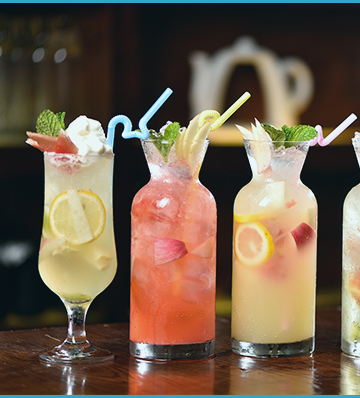
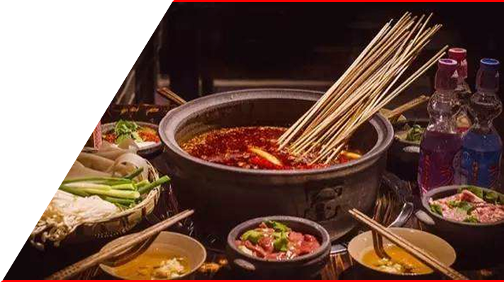
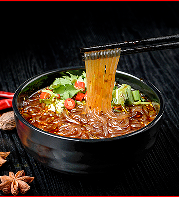

项目名称： 熟悉的串串
项目属性： 中小型投资，串串香麻辣烫项目
项目定位： 汤好，有料，老味道
目标人群： 14-70岁老中青三代
熟悉的串串，熟悉的味道，新中式快餐麻辣烫品牌，兼具冷锅、热锅双重属性，并涵盖麻辣小龙虾、酸辣粉、新派火锅、面点厨房、宵夜烤串、时尚流行饮品等等，蟾皮你丰富，打破传统麻辣烫局面，四季火爆。
源为江水
三沸三煮成浓汤


一沸一煮出汤色
在水第一次沸腾时加入猪骨、猪油，经过6小时的大火熬煮之后，煮出大骨中的胶原蛋白，汤底成乳白奶色，散发着醇厚馥郁的想起，长时间熬煮让猪骨内营养与汤底彻底融合，即使在炎热的夏季也丝毫不会感觉油腻。
二沸二煮出香料
乳白色的汤底第二次沸腾时，下入十余种香料搭配的串串军秘制的核心料包，经过两个小时的沸煮，与奶白色汤底充分融合，煮出来的串串君汤底浓郁香气。
三沸三煮出食味
第三次汤底沸腾时按先荤后素的顺序下入食材，煮出食材中的鲜嫩味道，出锅后一口咬下，汁水从食材中溢出，美味入喉的瞬间完成第一次“麻辣烫”的仪式。
冷热双锅
美食多



总有一款您喜欢，冷锅冷串钵钵鸡，热锅热汤麻辣烫，为了满足不同的季节，不同人群消费需求，串串君除了在冷热锅麻辣烫之外，还有特色饮品、风味小吃等美食。
总有一款合口味
蘸料汤底全球味
酸辣甜辛酱鲜香，研发出十余种不同口味的秘制美味蘸料，由来店食客按照口味自由搭配，每一个人的每碗麻辣烫，都有着属于自己IDE味道。研发团队走遍大江南北，收集国内外多种汤底，泰式酸辣，番茄咖喱，冬阴功，只有想不到的味道，没有我们做不出的味道。